VSCode 확장 · 개발 완료
NEXTLAB Builder
쓰던 에디터 안에서 디자인 변환·AI 코딩·표준 검사·커밋까지. 서버 구축 없이 VSIX 하나로 끝납니다.
- 대상프론트엔드 개발자 · 수행사
- 핵심Figma → 한화 DS React 코드, 빌드·렌더 검증까지 자동
- 설치VSIX 파일 설치 · 3단계 5분
한화생명 · AI 개발도구
NEXTLAB Builder 는 Figma 디자인을 한화 DS 코드로 바꾸는 VSCode 확장, NextLab Studio 는 기획·디자인부터 코드까지 잇는 데스크톱 워크스페이스입니다. 어느 AI 를 골라도 한화생명 개발표준이 자동으로 주입됩니다.
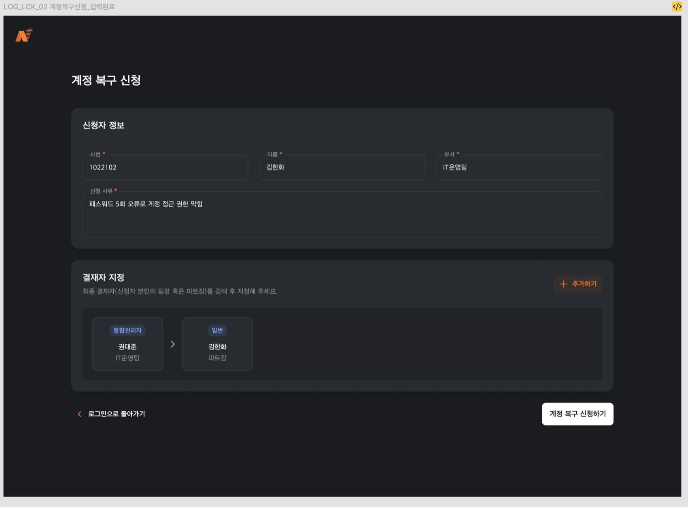
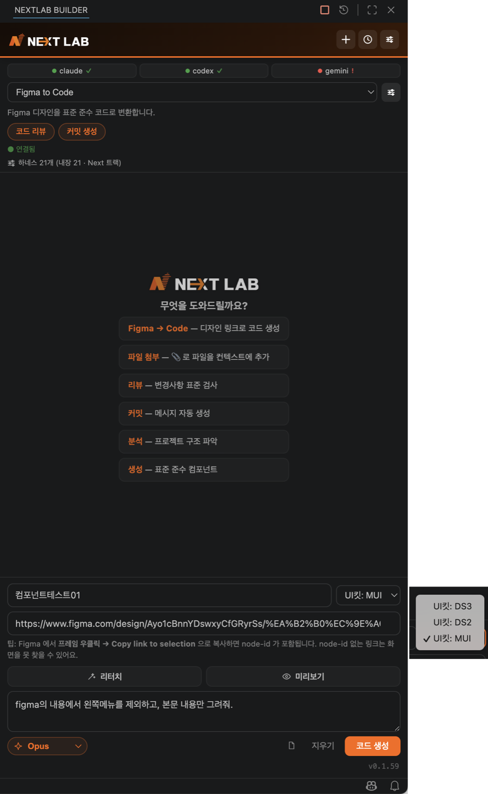
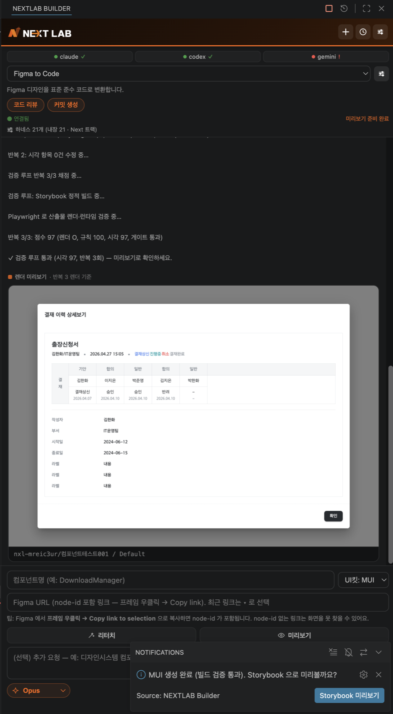
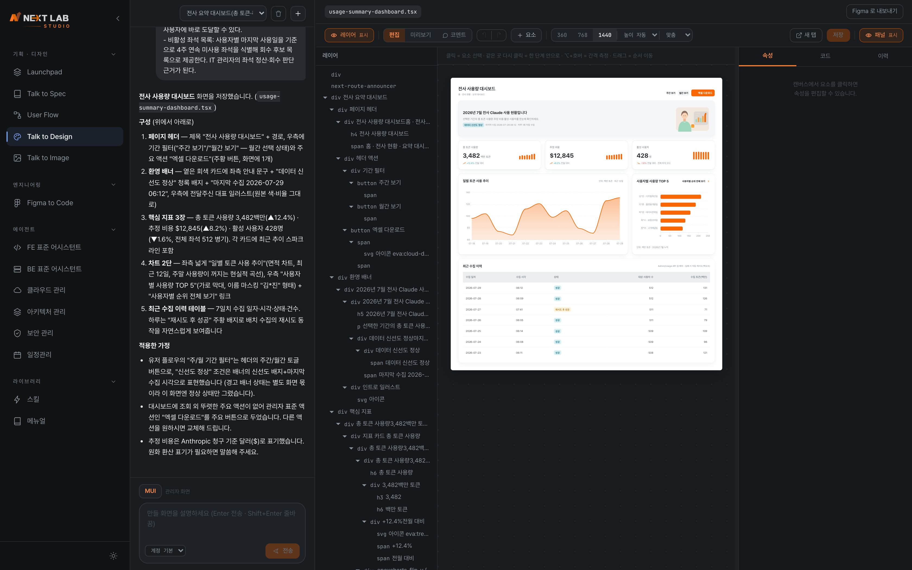
두 개의 도구, 하나의 표준
이미 코드를 쓰는 사람은 Builder 를, 아이디어부터 화면을 만드는 사람은 Studio 를 씁니다.
VSCode 확장 · 개발 완료
쓰던 에디터 안에서 디자인 변환·AI 코딩·표준 검사·커밋까지. 서버 구축 없이 VSIX 하나로 끝납니다.
데스크톱 앱 · 개발 완료
아이디어 → 기획 → 화면 흐름 → 실물 UI → 프로토타입을 한 흐름으로 잇고, Figma to Code 까지 품은 데스크톱 워크스페이스입니다.
Part 01 — NEXTLAB Builder
Claude · CodeX 는 경쟁사도 똑같이 쓰는 범용 엔진입니다. 차이는 모델이 아니라 그 모델이 한화생명의 표준대로 일하게 만드는 체계에서 나옵니다. Builder 는 백지가 아니라 한화생명의 표준·디자인시스템·보안 위에서 시작합니다.
Why Builder
그냥 쓰면 결과가 쓰는 사람에 따라 매번 다르고, 표준·보안은 "지켜달라"는 부탁에 그칩니다. 잘 쓰는 직원의 노하우는 그 사람이 떠나면 함께 사라집니다. Builder 로 쓰면 따로 배우거나 외울 것 없이 — 새 인력이 써도, 수행사가 써도 같은 품질의 한화 코드가 나옵니다.
Features
Figma to Code
스크린샷 추측이 아니라 Figma Dev Mode 로 실제 디자인 데이터를 읽습니다. 입력부터 검증 통과까지 5~10분.
STEP 1 — 입력
컴포넌트명 · UI 킷 · Figma 링크. 필요하면 "왼쪽메뉴 제외하고 본문만" 처럼 자연어 지시를 덧붙입니다.
STEP 2 — 실행 · 검증
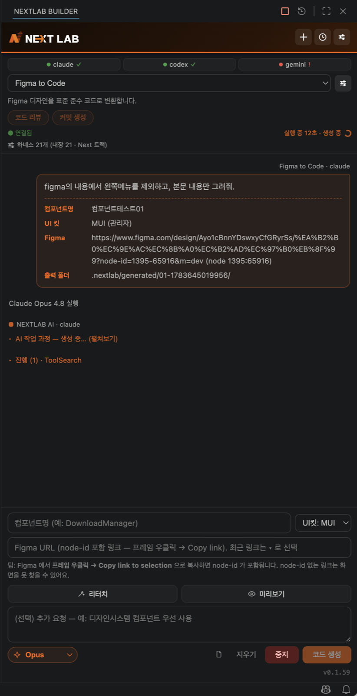
무엇이 실행되는지 먼저 보여주고, 도구 호출 단위 진행과 경과 시간이 그대로 보입니다. 언제든 중지할 수 있습니다.
STEP 3 — 완료
렌더 O · 규칙 100 · 시각 97 로 게이트 통과. 완료 화면을 그 자리에서 캡쳐해 채팅에 임베드합니다.
Result
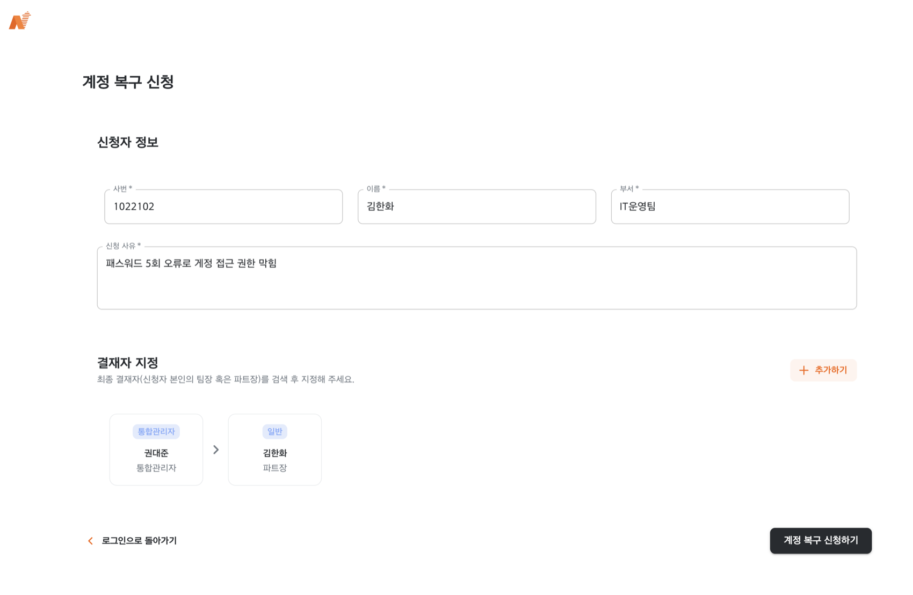
다크 모드를 따로 만들지 않았습니다. 테마 토큰 기반이라 Storybook 툴바 토글 한 번으로 Dark 와 Light 가 모두 나옵니다. 모바일 웹(DS2)·영업지원(DS3) 화면도 UI 킷 선택만 바꾸면 같은 흐름으로 생성됩니다.
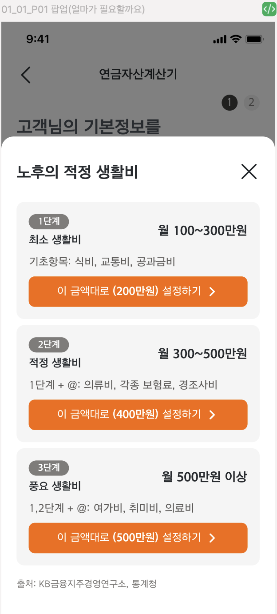
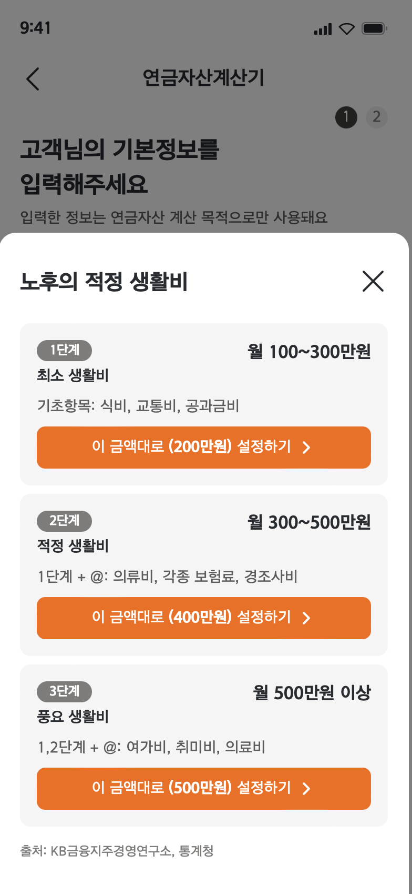
Standards & Security · Live
표준을 어기라고 시켜도 표준으로 답합니다. 민감정보는 나가기 전에 막힙니다.
AI 가 짠 코드든 사람이 짠 코드든 타이핑 즉시 잡습니다. 툴팁 한 줄에 규칙 번호 + 금지 이유 + 대안이 함께 나오고, Quick Fix 로 그 자리에서 고칩니다.
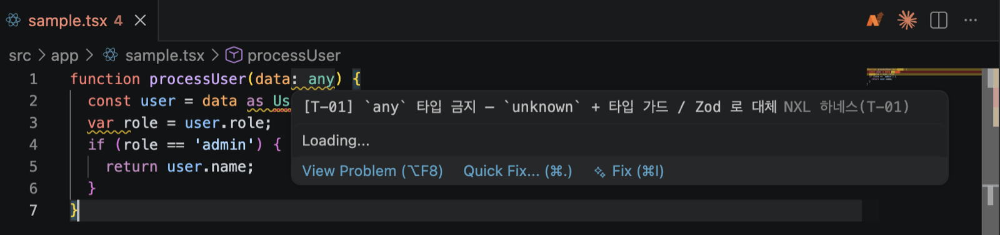
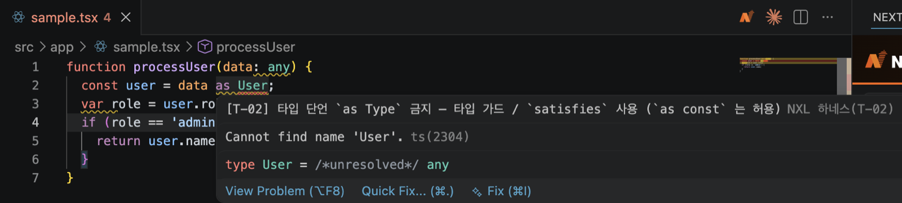
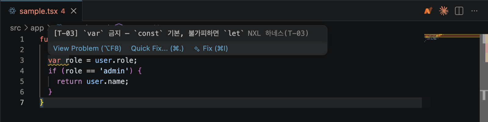
직접 입력한 주민등록번호는 물론, 무심코 첨부한 .env 안의 AWS 키까지 전송 직전에 검사합니다. 검사가 로컬에서 끝나므로 민감정보가 AI 서버에 도달한 적 자체가 없습니다.
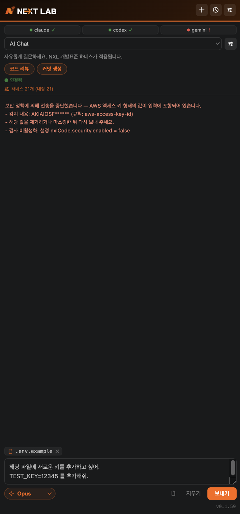
Anywhere
생성 엔진 · 디자인시스템 3종 · 개발표준 문서 · 아이콘 415종이 VSIX 하나에 전부 들어 있습니다.
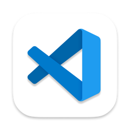
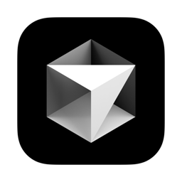
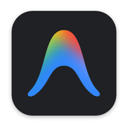
Part 02 — NextLab Studio
아이디어에서 기획 · 디자인 · 코드까지 이어지는 AI 에이전트 워크스페이스입니다. 기획·디자인 트랙(Talk to Spec → User Flow → Talk to Design → Prototype)과 엔지니어링 트랙(Figma to Code)은 개발이 완료되어 바로 사용할 수 있고, 내부망 모델을 연결하면 민감 정보가 외부로 나가지 않고 내부에서 완결됩니다.
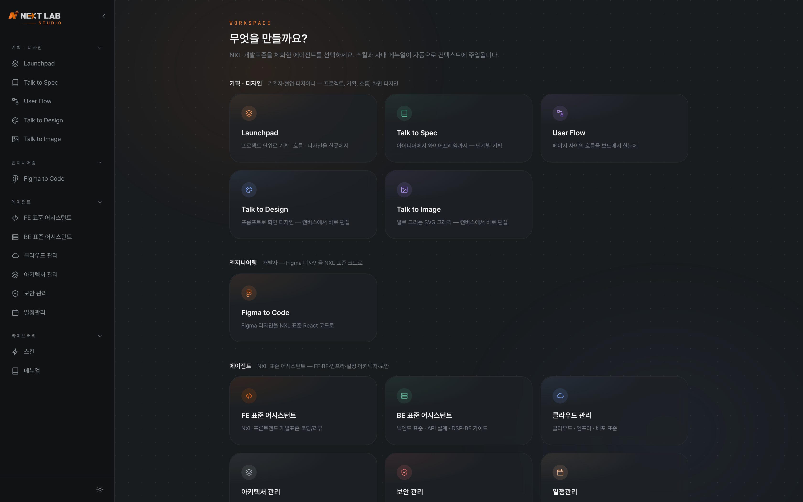
Overview
좌측 사이드바는 기획·디자인 / 엔지니어링 / 에이전트 / 라이브러리 네 구역입니다. 에이전트를 고르면 연결된 스킬·메뉴얼이 컨텍스트로 자동 주입됩니다.
Launchpad · 0 to 1
네 기능의 묶음이 아니라 하나의 연결된 파이프라인입니다. 아이디어 → PRD·기능명세 → 화면 흐름도 → 실물 화면 → 클릭해 보는 프로토타입.
STEP 1 — Talk to Spec
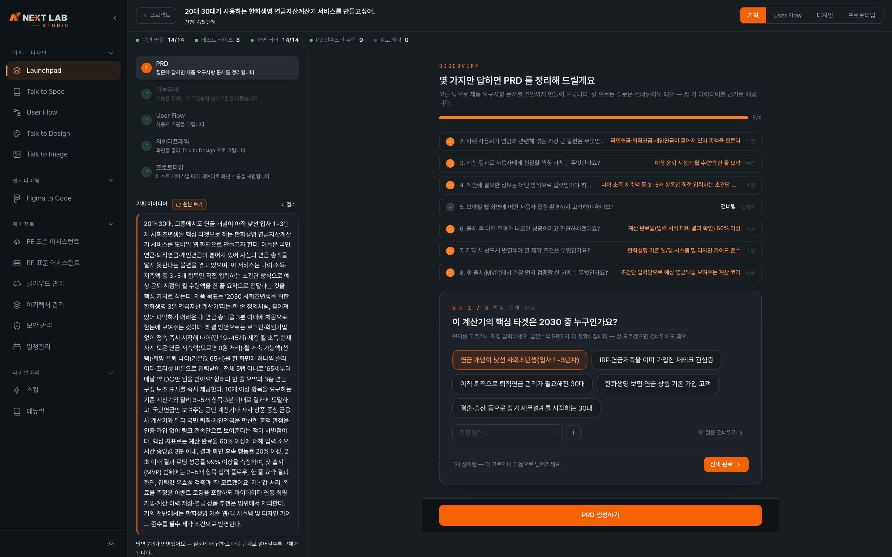
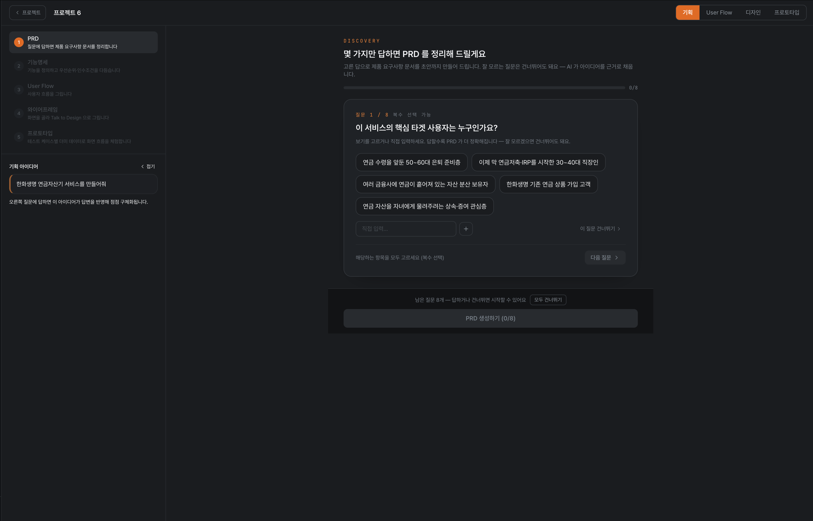
아이디어를 입력하면 객관식 질문지가 빠진 요건을 채웁니다 — 보기 선택·직접 입력·건너뛰기 모두 가능하고, 답할수록 기획 서술이 실시간으로 구체화됩니다. 답변을 근거로 PRD 와 기능명세(우선순위·인수조건)가 도출되며, 현업 요구사항 문서를 올려 가져올 수도 있습니다.
STEP 2 — User Flow
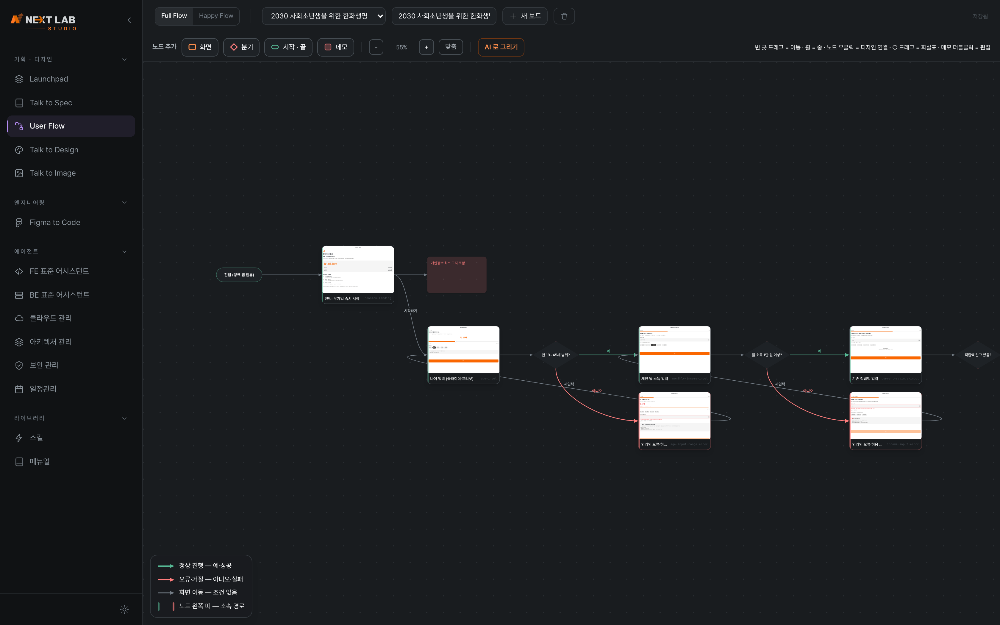
도출된 기획을 바탕으로 화면 간 흐름을 AI 가 자동 배치합니다. 정상 진행(초록)과 오류·거절(빨강) 경로를 색으로 구분하고, 화면·분기·메모 노드를 직접 추가하거나 노드 우클릭으로 디자인을 연결해 실제 화면 썸네일을 붙입니다.
STEP 3 — Talk to Design
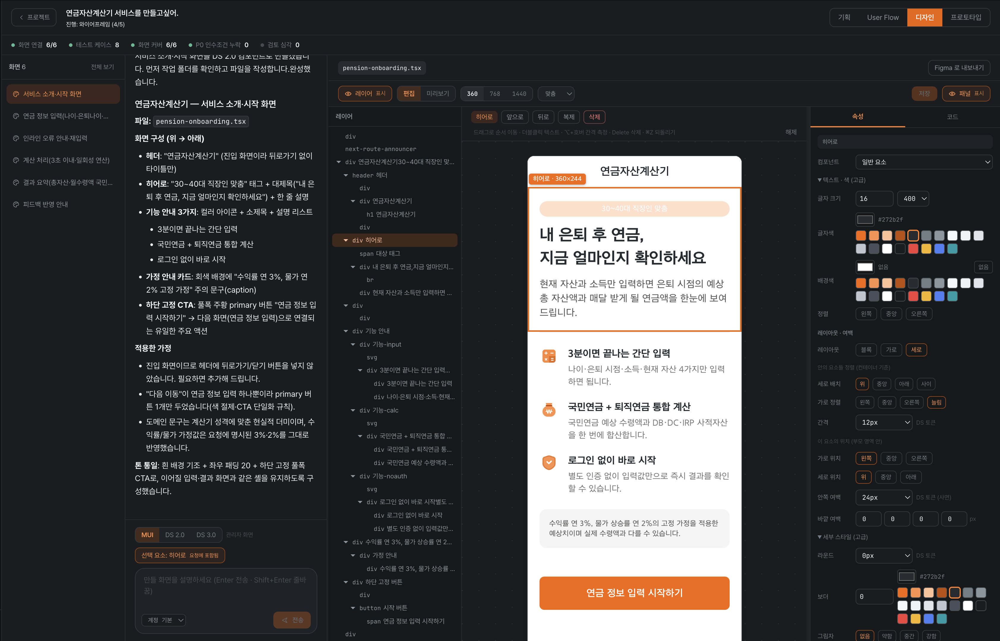
내장 캔버스에서 사내 디자인 킷(MUI 관리자 · DS 2.0 운영/모바일 · DS 3.0 영업)으로 실물 화면이 렌더됩니다. 요소 선택·드래그 재배치·텍스트 수정은 물론 버튼·카드·이미지 요소 추가와 Talk to Image 그래픽 삽입까지 캔버스에서 직접 — 저장하면 이후 AI 수정이 그 위에서 이어집니다.
STEP 4 — Prototype
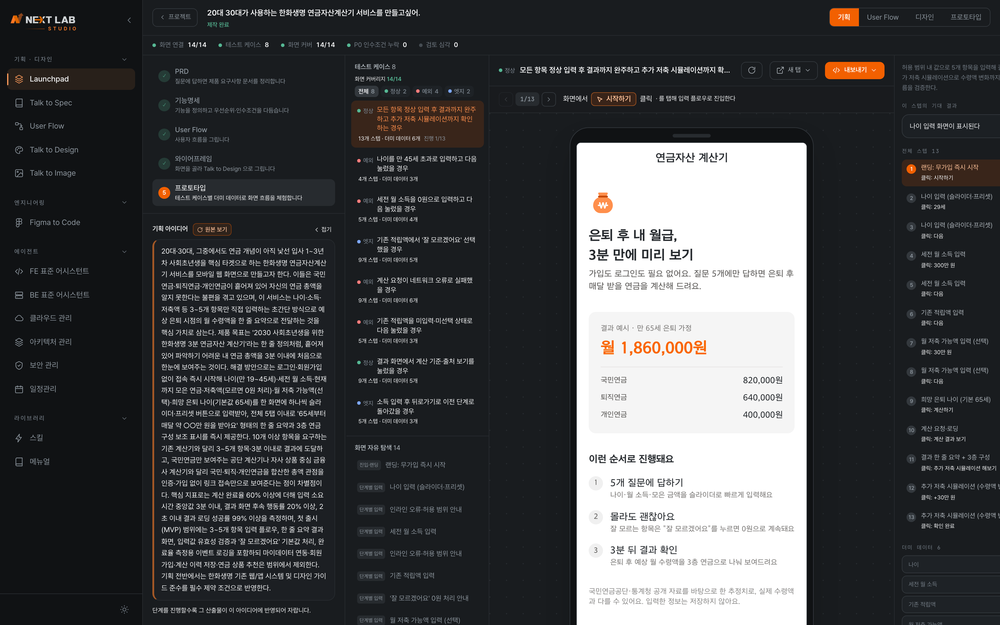
기획·흐름·화면을 근거로 정상 · 예외 · 엣지 테스트 케이스를 자동 설계하고, 케이스별 더미 데이터가 실린 화면을 실제 서비스처럼 직접 클릭하며 진행합니다. 화면 연결·케이스 커버리지 지표로 빠진 곳이 바로 드러납니다.
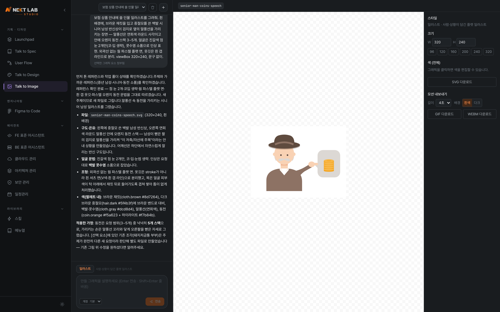
Talk to Image
일러스트 · 아이콘 · 로딩 씬 같은 낱개 SVG 그래픽을 대화로 생성하는 캔버스입니다. 스톡 이미지를 찾아 헤매거나 디자이너 일정에 기다리지 않아도 됩니다.
Engineering · Figma to Code
VSCode 확장(Builder)과 동일한 NXL 표준 생성 워크플로를 데스크톱 앱에 내장했습니다. 개발 환경이 없는 PC 에서도 탐색기 · 에디터 · 에이전트 패널을 갖춘 IDE 워크스페이스로 코드를 만들고 검증합니다.
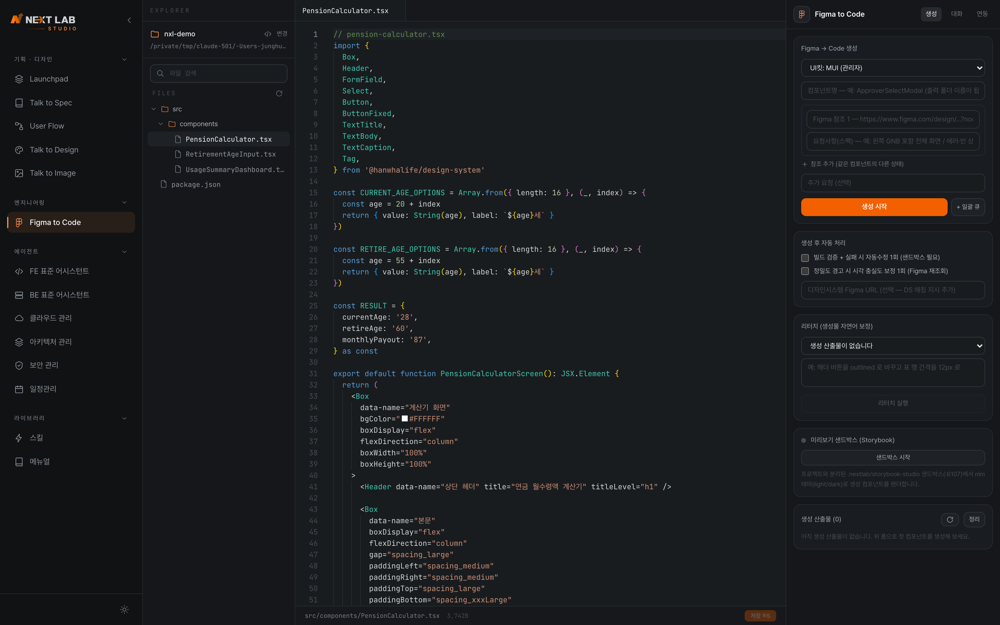
Value
Agents
각 분야의 스킬과 사내 메뉴얼이 컨텍스트로 자동 주입되어, 자사 환경 기준으로 답하는 대화형 워크스페이스입니다.
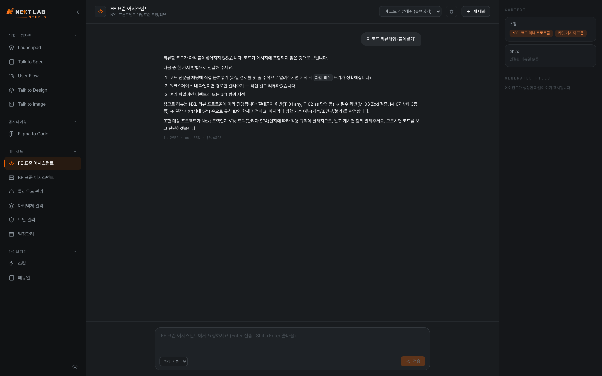
Governance & Roadmap
OAuth 토큰은 OS 키체인에 암호화 저장되고 외부 서버로 전송되지 않습니다. 도구 권한은 표준 / 전체 허용 2단계로 통제합니다.
Phase 1 · Now
Phase 2 · Next
Phase 3 · Future
Notice
한화생명 표준 위에서 동작하지만, 판단과 책임은 사용자에게 남습니다.
고객 실데이터·주민등록번호·계좌·인증서·API 키는 프롬프트와 첨부 파일에 넣지 않습니다. 화면 검증에는 더미 데이터를 사용하십시오. Builder 의 사전 차단(8종 패턴)은 보조 장치이며, 탐지 범위를 벗어난 정보에 대한 판단 책임은 사용자에게 있습니다.
입력한 요구사항·첨부 파일·선택한 코드와 Figma 디자인 데이터는 외부 LLM 서버를 경유합니다. 반출 가능 범위 내에서만 사용하십시오.
실행 계정은 각자의 Claude 개인 구독을 OAuth 로 연결해 사용하며, 토큰은 OS 키체인에 암호화 저장됩니다. 과금·감사 경로를 하나로 유지하기 위해 API 키 방식은 의도적으로 지원하지 않습니다. 사용량만큼 비용이 발생하며 실행 이력·토큰·비용은 기록됩니다. 계정 공유 및 공용 계정 사용은 제공사 약관 위반으로 금지합니다. 조직 단위 비즈니스 계정 체계로의 전환은 로드맵에 포함되어 있으며, 전환 시 별도 안내합니다.
사내 배포용 파일로 외부 공유를 금지합니다. 재배포본·구버전은 최신 표준이 반영되지 않으므로 사용하지 않습니다. 현재 버전 — Builder v0.3.8 · Studio v0.1.0
생성된 코드·기획서·디자인은 초안입니다. AI 특성상 결과가 100% 일정하지 않으므로 커밋·PR 리뷰를 거치고, 운영 배포는 기존 승인 절차를 그대로 따릅니다. 자동 검증 통과는 표준 적합성만 보장하며 업무 요건 충족을 보장하지 않습니다.
개발표준 21개 모듈과 진단 규칙 18개는 팀 합의로 개정합니다. 로컬에서 규칙을 임의 해제하거나 표준 문서를 수정한 상태로 산출물을 제출하지 마십시오.
AI 가 제안한 패키지·코드 조각도 사내 오픈소스·보안 심의 대상입니다. 라이선스 확인 없이 의존성을 추가하지 마십시오.
Install & Manual
사내 배포용 파일입니다. 외부 공유를 금지합니다.
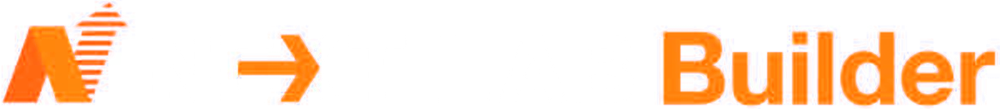
VSCODE 확장 · v0.3.8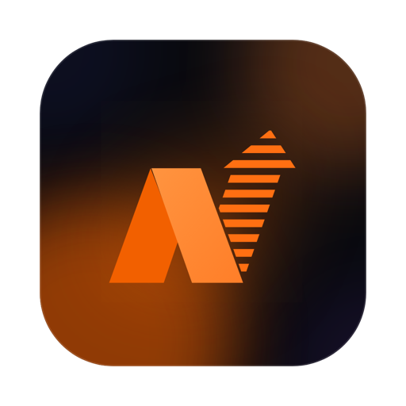
데스크톱 앱 · v0.1.0